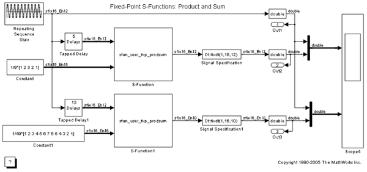
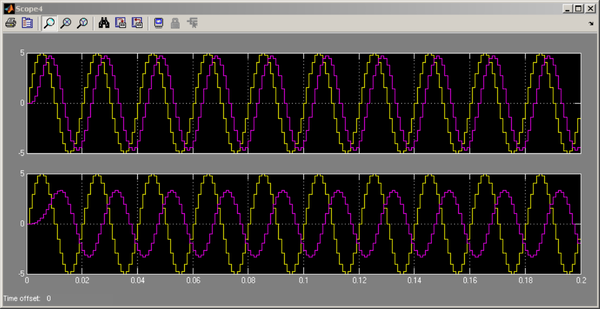

Fixed-Point S-Functions: Product and Sum
This model exercises a custom C language S-function written to compute a fixed-point "product and sum" operation. To see the source code for the S-function, use the right-click context menu to select "Look Under Mask". When the dialog box appears, press the Edit button.
 